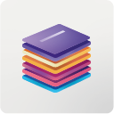
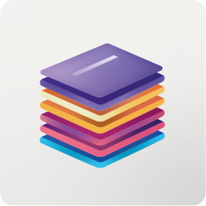
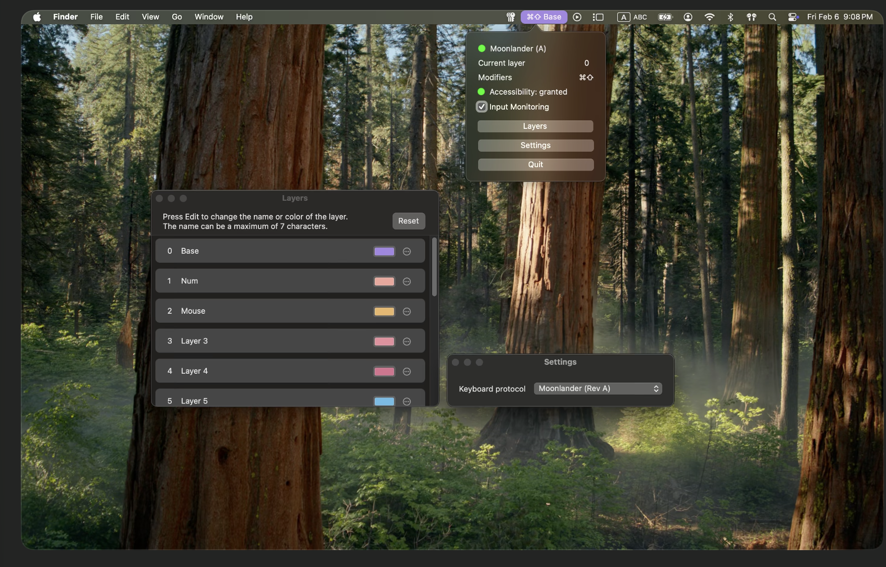
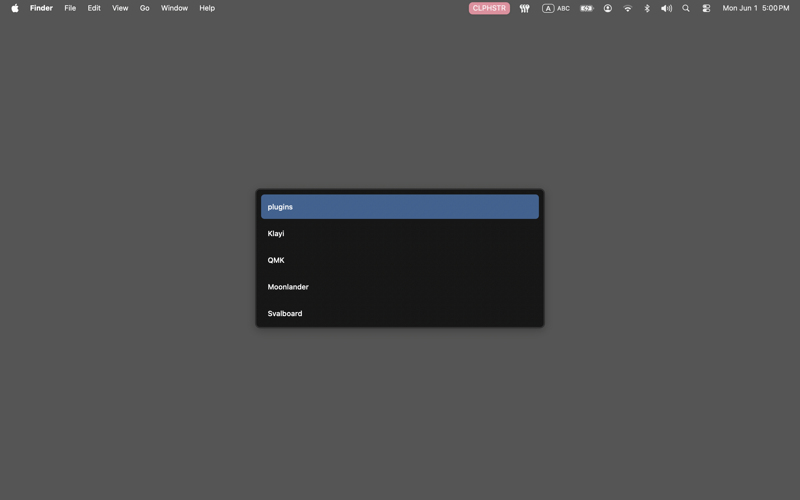
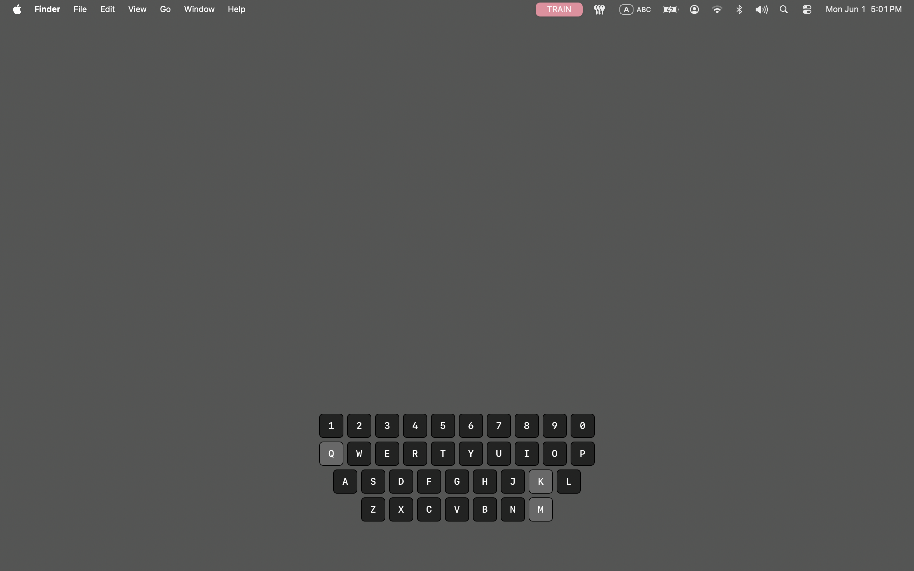

Menu bar visibility
The current layer and modifier state stay visible in the macOS status bar, which makes mode changes easier to trust during normal work.

KlayimacOS utility for custom keyboards
Klayi connects to supported keyboards and shows the current layer and active modifiers directly in the macOS status bar. It can also trigger plugins from assigned layers, so layer changes can open focused tools without breaking flow.

Status bar visibility
Always know which layer is active.
Why use it
The current layer and modifier state stay visible in the macOS status bar, which makes mode changes easier to trust during normal work.
Configure up to 15 layers with short custom names and distinct colors, so your keyboard state is recognizable at a glance.
Klayi reads state from supported keyboards over USB instead of relying on memory or assumptions about what layer should be active.
Assign a plugin to a layer and Klayi signals to it when the keyboard switches to that layer.
Real app
This is the actual application interface: the menu bar indicator, the popup state panel, layer list, and settings windows as they appear in use.

How it fits
Klayi listens to supported boards over USB and surfaces live state inside macOS.
Assign compact labels and color chips in settings so the state shown in the menu bar maps to your real layout design.
See the active layer and modifier combination before a shortcut or symbol lands in the wrong context.
Plugins
A plugin is triggered when your keyboard switches to the layer assigned to it. For example, the clipboard history plugin opens an overlay where you can choose an item from your clipboard history and paste it back into the active app.
Switch to the assigned layer to show a clipboard history overlay, select an entry, and paste it without leaving the keyboard flow.
Switch to the assigned layer to show a training layer overlay, press any key on your keyboard, see it activate in the overlay.


Supported hardware
Klayi currently supports Svalboard and Moonlander. Moonlander works out of the box via the Oryx protocol, while Svalboard uses a QMK firmware integration.
Requires flashing the fork firmware
Works out of the box via the Oryx protocol, with no custom firmware flash required.
Video overview
Open the current overview video to see how Klayi reports active layers and modifiers in the macOS status bar.
Watch on YouTubePrivacy
Klayi is a local macOS utility. It does not collect personal data, run analytics, telemetry, or require an account to work.
None.
None.
None.
No account required.
Support
The public repository is the support channel for issues, documentation, and future development updates.
Open the project repository for support and project details.